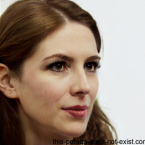

|  | Welcome to Urban Yoga Studio, where we believe in the transformative power of yoga for every body. Founded by Natalie Rogers, our studio is dedicated to creating a welcoming environment for yogis of all levels, from beginners to seasoned practitioners.
Natalie, a certified yoga instructor with over a decade of experience, is passionate about guiding students on their journey to mindfulness and physical wellness. Her classes blend traditional practices with modern techniques, ensuring each session is both enriching and accessible. Natalie's warm and encouraging approach inspires students to embrace their unique paths.
At HUrban Yoga Studio, we offer a variety of classes, including Hatha, Flow, and Restorative yoga. Our mission is to cultivate a community where everyone feels empowered to explore their practice in a supportive atmosphere. We also host workshops and events that focus on holistic wellness, meditation, and personal growth.
Join us at Urban Yoga Studio, where every breath is an opportunity for growth, connection, and inner peace. Whether you're here to unwind, strengthen, or find your center, we’re excited to support you on your journey. Come share your practice with us! |
 Home
About us
What classes we provide
Book a class
Home
About us
What classes we provide
Book a class